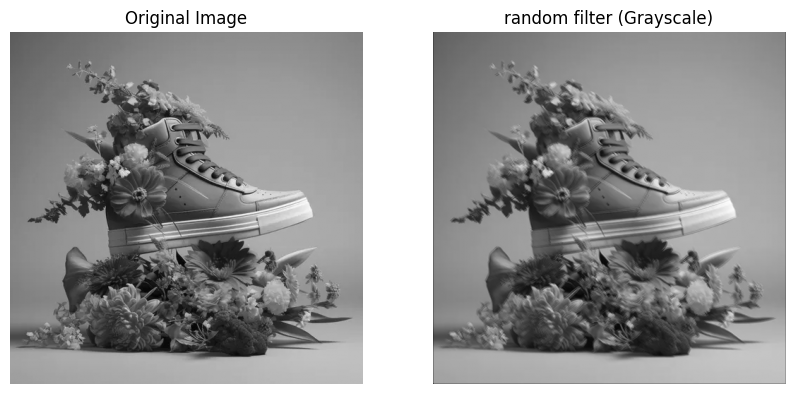
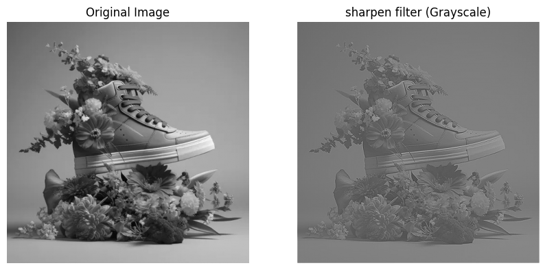
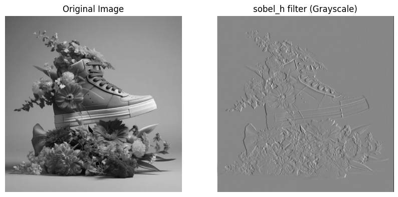
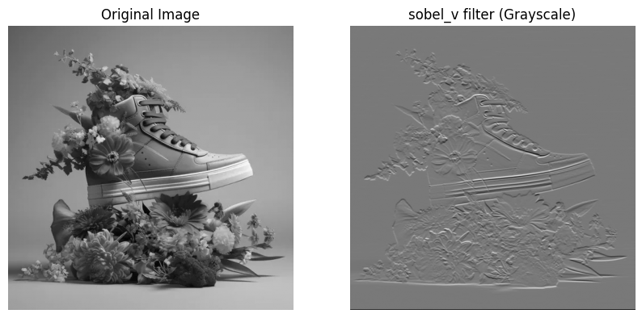

Objectif Principal
Ce code démontre comment appliquer différents filtres convolutifs à des images (en niveaux de gris et en couleurs) en utilisant PyTorch. Les filtres incluent :
- Flou (moyenneur)
- Détection de contours (Sobel horizontal/vertical)
- Accentuation (sharpen)
- Effet aléatoire
Flux de Traitement
- Chargement de l'Image
- Fonction : load_image_pytorch()
- Actions :
- Lit l'image avec OpenCV
- Convertit en niveaux de gris ou conserve les canaux RGB
- Transforme en tenseur PyTorch
- Normalise les valeurs des pixels entre 0 et 1
- Formate le tenseur selon la convention PyTorch : [batch_size, canaux, hauteur, largeur]
- Application des Filtres
- Fonction : apply_convolution_pytorch()
- Mécanisme :
- Adapte le noyau 2D au format 4D requis par PyTorch
- Pour les images RGB, applique le même filtre à chaque canal indépendamment
- Utilise un padding pour conserver la taille originale de l'image
- Applique la convolution via F.conv2d
- Visualisation
- Fonction : display_results_pytorch()
- Processus :
- Convertit les tenseurs PyTorch en format compatible avec Matplotlib
- Affiche côte à côte l'image originale et l'image filtrée
- Adapte l'affichage pour les images en niveaux de gris ou en couleurs
- Bibliothèque de Filtres
- Fonction : get_kernels_pytorch()
- Contenu :
- Définit plusieurs noyaux de convolution classiques
- Chaque noyau produit un effet spécifique sur l'image
- Le noyau aléatoire montre l'effet de poids non-structurés
Points Techniques Importants
- Format des Tenseurs :
- PyTorch attend les images sous forme [N, C, H, W] (batch, canaux, hauteur, largeur)
- Les opérations de convolution nécessitent des noyaux au format [out_channels, in_channels, kH, kW]
- Normalisation :
- Les valeurs des pixels sont ramenées dans l'intervalle [0, 1] pour une meilleure stabilité numérique
- Gestion des Couleurs :
- Pour les images RGB, le même filtre est appliqué séparément à chaque canal (R, G, B)
- Cela préserve les relations entre canaux tout en appliquant la transformation
- Padding :
- Le padding est calculé automatiquement pour maintenir la taille originale de l'image après convolution
Applications Pratiques
- Comprendre les opérations de base du traitement d'image
- Préparer des données pour des réseaux neuronaux convolutifs
- Implémenter des effets photographiques simples
- Servir de base à des algorithmes plus complexes (détection de caractéristiques, etc.)
1. Filtre BLUR

2. Filtre BLUR RGB

3. Filter Random
4. Filter Random RGB

5. Filter Sharpen
6. Filter Sharpen RGB

7. Filter Sobel_h
8. Filter Sobel_h RGB

9. Filter Sobel_V
10. Filter Sobel_h RGB